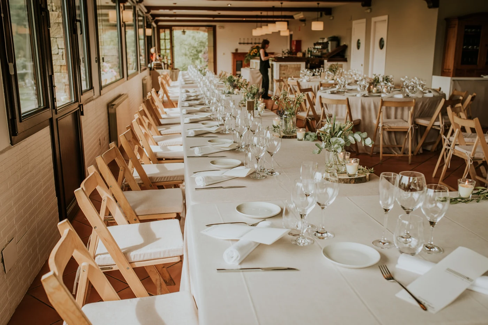
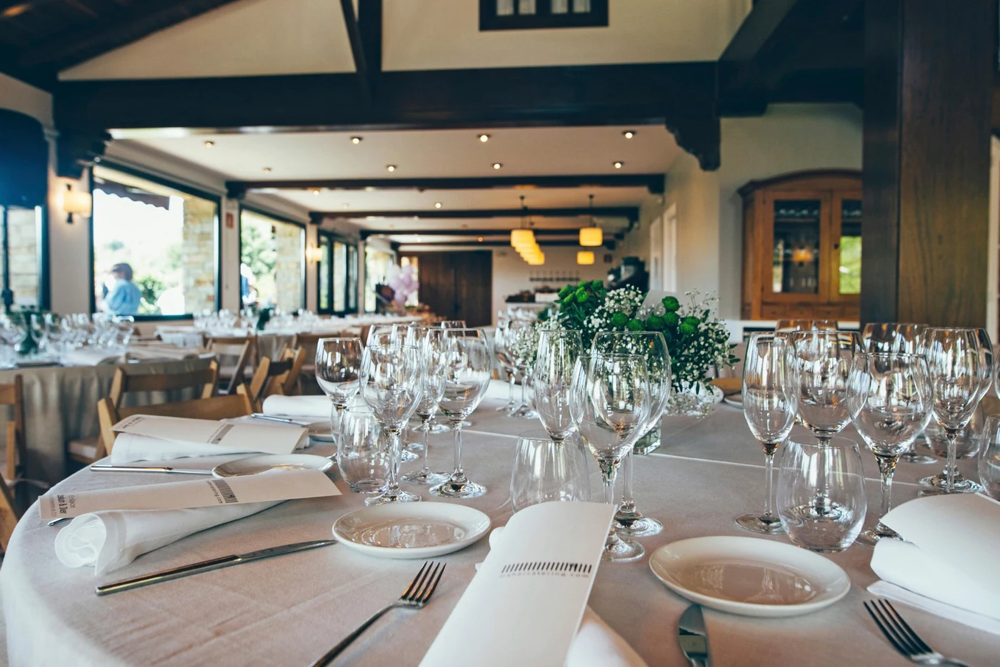
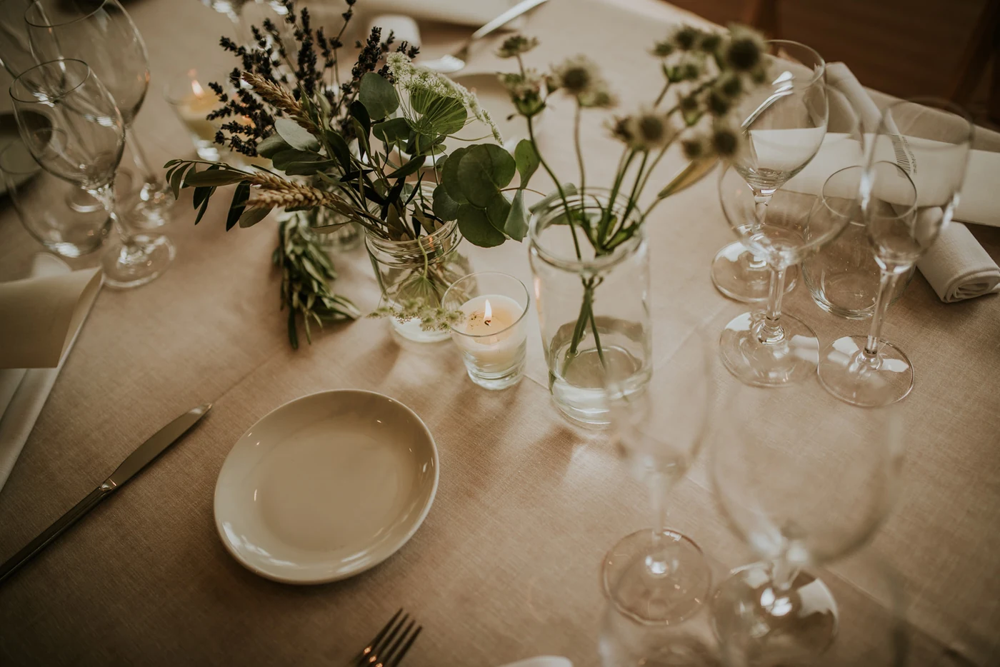
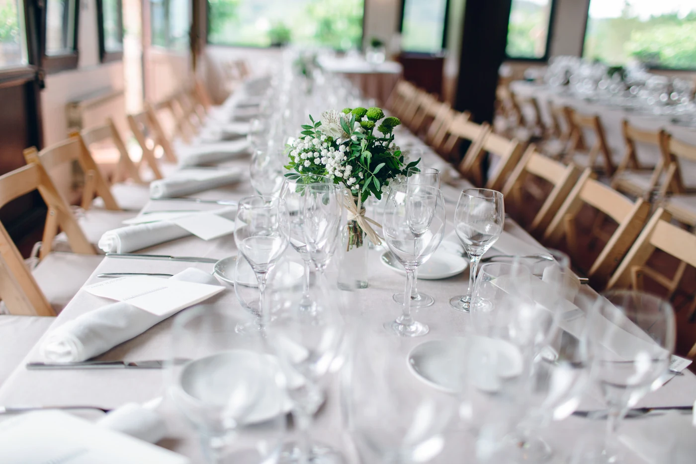

Gastronomía
Experience & Food — Mahercatering
Una propuesta que conjuga creatividad, calidad y sabores tradicionales, junto a los nuevos sabores del mundo.

Gastronomía
Experience & Food — Mahercatering
Descubre una de las propuestas gastronómicas más creativas y de vanguardia: Mahercatering. Una propuesta que conjuga creatividad, calidad y sabores tradicionales, junto a los nuevos sabores del mundo.

Con más de 30 años de experiencia, a lo largo de su trayectoria ha sido reconocida con multitud de premios entre los que destacan el Premio «Uno de los 10 mejores platos de la década» (Madrid Fusión), el Premio Marqués de Desío (Academia Española de Gastronomía), el Premio de Turismo a la Innovación (Gobierno de Navarra), el Vogue Catering Selección y el Wedding Awards 2017 de Bodas.net.

EXPERIENCE & FOOD. Mahercatering convierte cualquier evento en una experiencia gastronómica y visual única e inolvidable, con capacidad y versatilidad para adaptarse a cualquier espacio o singularidad de un evento.

Cuéntanos tu idea
Ven, cuéntanos cómo lo imaginas y nosotros pondremos todo el cariño y la dedicación que mereces.